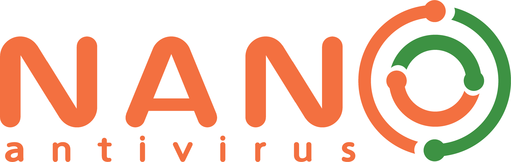

Что такое антивирусные программы?
Антивирусная программа (антивирус, средство антивирусной защиты, средство обнаружения вредоносных программ) — специализированная программа для обнаружения компьютерных вирусов, а также нежелательных (считающихся вредоносными) программ и восстановления заражённых (модифицированных) такими программами файлов и профилактики — предотвращения заражения (модификации) файлов или операционной системы вредоносным кодом.
Наиболее популярные платные антивирусы:
- Kaspersky Premium
- Комплексный антивирусный продукт от компании Kaspersky Lab, который обеспечивает защиту устройств от различных киберугроз, включая вирусы, вредоносное ПО, фишинговые атаки и шпионские программы.
Стоимость: от 2 039 рублей/год.
- PRO32 Total Security
- Комплексное решение для обеспечения безопасности компьютера, которое включает в себя антивирусную защиту, файрволл, антифишинг, родительский контроль и другие инструменты для защиты системы от вирусов, вредоносных программ и онлайн-угроз.
Стоимость: от 939 рублей/год.
- Dr.Web Katana
- Система превентивной защиты от новых и неизвестных угроз, разработанная компанией Dr.Web. Она защищает компьютер даже тогда, когда традиционные антивирусы бессильны, благодаря технологиям поведенческого анализа и проактивной защиты.
Стоимость: от 647 рублей/год.
- Kaspersky Plus
- Подписка на расширенный набор сервисов безопасности от Kaspersky, включающий премиальные версии антивирусных продуктов, VPN, менеджер паролей и другие инструменты для защиты устройств и данных.
Стоимость: от 1 839 рублей/год.
- Dr.Web Security Space
- Комплексное антивирусное решение от компании Dr.Web, обеспечивающее защиту компьютеров и мобильных устройств от вирусов, троянов, шпионского ПО, руткитов и других киберугроз.
Стоимость: от 1 290 рублей/год.
- NANO Pro
- Мощная система защиты от киберугроз, созданная компанией NANO Security. Продукт объединяет антивирус, антишпион, фаервол и инструменты для оптимизации работы системы, обеспечивая комплексную безопасность и высокую производительность устройства.
Стоимость: от 299 рублей за 100 дней.
- Kaspersky Standard
- Базовая версия антивирусного решения от Kaspersky Lab, предназначенная для защиты компьютера от основных видов киберугроз, таких как вирусы, трояны и шпионское ПО.
Стоимость: от 1 519 рублей/год.
- Антивирус Grizzly Pro
- Программное обеспечение для защиты компьютера от вирусов, вредоносных программ и других кибератак. Оно обеспечивает надежную защиту в режиме реального времени, а также имеет функции сканирования системы и удаления угроз.
Стоимость: от 1 000 рублей/год.
- Kaspersky Safe Kids
- Программа для родительского контроля, позволяющая отслеживать активность детей в интернете, ограничивать доступ к нежелательным сайтам и приложениям, а также контролировать время использования устройств.
Стоимость: от 990 рублей/год.
Наиболее популярные бесплатные антивирусы:
- Microsoft Defender
- Антивирус компании Microsoft, встроенный по умолчанию в операционные системы Windows (начиная с XP).
- Dr.Web CureIt
- Бесплатная антивирусная утилита для сканирования компьютеров под управлением Windows с целью обнаружения и удаления вредоносных программ, а также лечения данных.
- Kaspersky Security Cloud Free
- Бесплатная версия антивирусного решения от «Лаборатории Касперского». Основана на запатентованной технологии адаптивной защиты.
- 360 Total Security
- Комплексная антивирусная защита от вредоносных программ и онлайн-угроз. Программа не только защищает компьютер, но и обеспечивает дополнительные возможности по оптимизации и очистке ПК для более стабильной и быстрой работы.
- Comodo Антивирус
- Бесплатный антивирус с закрытым кодом компании Comodo.Программа предназначена для защиты компьютеров, серверов и сетей от широкого круга угроз, связанных с вредоносным кодом.
- ClamWin
- Бесплатный антивирусный сканер для Windows. Обеспечивает графический интерфейс к пакету Clam Antivirus.
- Microsoft Security Essentials
- Бесплатный пакет антивирусных приложений от компании Microsoft, предназначенный для борьбы с различными вирусами, шпионскими программами, руткитами и троянскими программами.
- Avast One Essential
- Бесплатный антивирус от компании Avast, который представляет собой набор средств безопасности.
Какие виды вирусов существуют?
Современные киберугрозы становятся все более изощренными. Ниже представлена классификация основных типов вредоносного ПО, с которыми борются антивирусные программы:
| Тип вируса |
Описание |
Примеры |
Способ защиты |
| Файловые вирусы |
Заражают исполняемые файлы (.exe, .dll) |
CIH (Чернобыль), Sality |
Антивирусное сканирование |
| Могут повреждать или заменять исходный код программ |
Melissa |
Регулярное обновление ПО |
| Макровирусы |
Внедряются в документы (Word, Excel) |
Concept, Macro.Word97.Thus |
Отключение макросов |
| Активируются при открытии файла |
XM.Laroux |
Проверка вложений |
| Сетевые угрозы |
| Черви |
Распространяются по сети без участия пользователя |
ILOVEYOU, Mydoom |
Фаерволы, обновления ОС |
| Трояны |
Маскируются под полезное ПО, крадут данные |
Zeus, Emotet |
Антивирус с поведенческим анализом |
| Современные угрозы |
| Рансомвер |
Шифрует файлы и требует выкуп |
WannaCry, Petya |
Резервное копирование |
| Руткиты |
Скрывают вредоносную активность в системе |
Stuxnet, TDSS |
Загрузка в безопасном режиме |
Логотипы популярных антивирусов

